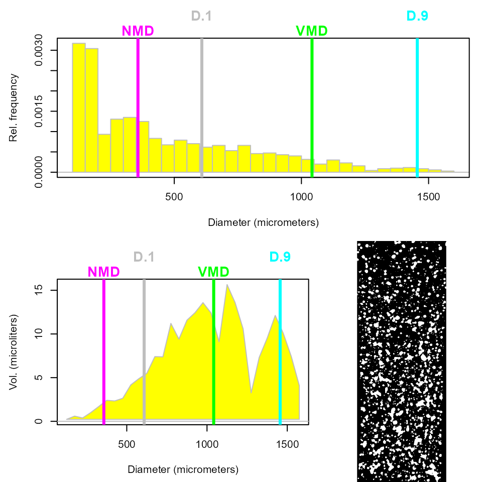

vignettes/overview.Rmd
overview.RmdThis is an introduction on how to use the package hydropaper. It is important that you have first read some basic instructions on how to capture images of water-sensitive papers, specially when they are taken from the crop field.
The functions rely on the image-handling functions of the package EBImage (Pau et al., 2010), so that images can be read and manipulated using its implementations such as readImage(), resize() and rotate().
To get started, load the package:
hydropaper is loaded with a pre-trained detector of water-sensitive papers, based on SURF (Speeded Up Robust Features) descriptor. It will search for points in the image being analyzed that are similar to that detector. Then, a red rectangle (horizontal or vertical) likely to wrap the paper is drawn on the image.
Both an image (class Image) or the path (a character) to an image file (.jpg, .png, .tif) are accepted as argument.
path <- system.file('images', 'field1.jpg', package = 'hydropaper')
p1 <- detectPaper(path)Now the object p1 is an image that contains an attribute with the bounding box of the paper in the original image.
attr(p1, 'paper_bbox')
#> xmin ymin xmax ymax
#> 170.7656 186.1319 900.3028 455.6520Estimating spray parameters such as density of drops per squared centimeters, volumetric median diameter (VMD) of droplets and planty of others is easy. Once you have an image of the paper alone, i.e., either as a result of detectPaper() or one that was manually clipped using clipPaper() or even just an image file, point it out to analyzePaper(). Notice that the argument paper_dim (in mm) must be passed in order to correctly estimate the parameters. The argument distance (in m) will be used to estimate the drift using the ‘German model’ for field crops (Rautmann et al., 2001). Finally, display.it = TRUE will show the image of the paper with the detected droplets highlighted in cyan.
a1 <- analyzePaper(p1,
paper_dim = c(76, 26),
distance = 0.7,
display.it = TRUE)
print(a1)
#>
#> Water-Sensitive Paper Analysis
#>
#> N drops: 1394
#> Spray coverage (%): 18.1
#> Density (drops/cm2): 71
#> Vol. applied (microliters): 356.96
#> L/ha (predicted): 1806.49
#> Mean diameter (micronmeters): 397
#> NMD (micrometers): 273
#> VMD (micrometers): 639
#> D.1 (micrometers): 299
#> D.9 (micrometers): 965
#> Relative amplitude: 1.04
#> Largest drop (micrometers): 1549
#> Smallest drop (micrometers): 100
#> Diam. class % (<105, 105-340, >340): 25.8 31.4 42.8
#> CV area (%): 135.2
#> CV diam. (%): 82.6
#> Good to spray:
#> Drift (%): 96.1Would it not be good to see some graphic results? This code below will give an histogram of the droplet diameters, locating VMD, D.1, D.9 and NMD. Furthermore, it will show the volume of droplets deposited on the paper against the diameter.
plot(a1)
Now that you have done analyzing the paper, hydropaper can also help you to create a report with those results in a HTML file that can be printed out or shared with your partners. Running the code below will generate this file, namely hyropaper_report.html, in the R current working directory.
makeReport(a1)– And what about if I have a lot of images? No problem! In this case, hydropaper can detect the paper in every one of them and the automatically make the analyses that we have seen above. Just put all your images in a folder, with no file other than the images, and point the path. Say for example that these two image files are in a folder.
path <- system.file('images', package = 'hydropaper')
list.files(path)
#> [1] "field1.JPG" "field2.JPG"The code below will do the analyses in a loop. Note: it works just like analyzePaper(), with the same arguments, except the first one that must be the path of the folder containing the images.
a2 <- analyzeImages(path)
print(a2)
#> $field1.JPG
#>
#> Water-Sensitive Paper Analysis
#>
#> N drops: 1394
#> Spray coverage (%): 18.1
#> Density (drops/cm2): 71
#> Vol. applied (microliters): 356.96
#> L/ha (predicted): 1806.49
#> Mean diameter (micronmeters): 397
#> NMD (micrometers): 273
#> VMD (micrometers): 639
#> D.1 (micrometers): 299
#> D.9 (micrometers): 965
#> Relative amplitude: 1.04
#> Largest drop (micrometers): 1549
#> Smallest drop (micrometers): 100
#> Diam. class % (<105, 105-340, >340): 25.8 31.4 42.8
#> CV area (%): 135.2
#> CV diam. (%): 82.6
#> Good to spray:
#> Drift (%): 96.1
#>
#>
#> $field2.JPG
#>
#> Water-Sensitive Paper Analysis
#>
#> N drops: 43
#> Spray coverage (%): 0.5
#> Density (drops/cm2): 2
#> Vol. applied (microliters): 8.93
#> L/ha (predicted): 45.18
#> Mean diameter (micronmeters): 373
#> NMD (micrometers): 200
#> VMD (micrometers): 591
#> D.1 (micrometers): 254
#> D.9 (micrometers): 1177
#> Relative amplitude: 1.56
#> Largest drop (micrometers): 3331
#> Smallest drop (micrometers): 120
#> Diam. class % (<105, 105-340, >340): 0 67.4 32.6
#> CV area (%): 207.2
#> CV diam. (%): 141.9
#> Good to spray:
#> Drift (%): 96.1Good! This object a2 is just a list (of length 2 in this case). You can print() or plot() each element of that list by subsetting it with [[, and you can create a HTML report.
makeReport(a2)Gregoire Pau, Florian Fuchs, Oleg Sklyar, Michael Boutros, and Wolfgang Huber (2010): EBImage - an R package for image processing with applications to cellular phenotypes. Bioinformatics, 26(7), pp. 979-981.
Rautmann, D., M. Streloke, R. Winkler (2001) New basic drift values in the authorization procedure for plant protection products. In: R. Forster & M. Streloke, Workshop on Risk Assessment and Risk Mitigation measures in the context of the authorization of plant protection products (WORMM) 27.-29. September 1999. Mitteilungen aus der Biologischen Bundesanstalt für Land- und Forstwirtschaft, Berlin-Dahlem, Heft 381. 2001. 133-141.